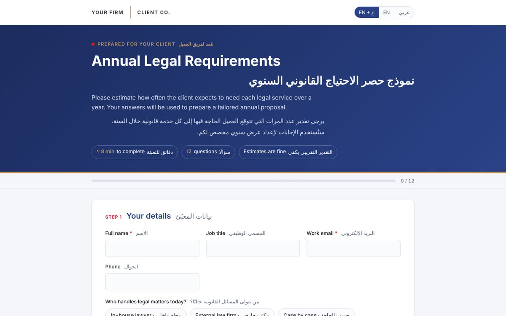

Annual legal needs questionnaire
A bilingual questionnaire where the client estimates how often they need each service in a year, which then shapes the proposed retainer.

The problem
Annual retainers are often priced by guesswork, so the offer comes out either too expensive to accept or too cheap for the firm.
How it works
- The client sets the expected volume for each service over the year.
- The answers reach the team by email, already organised.
- The proposal is built on the client's own numbers, which makes the price easy to explain.
Try it yourself
Switch language at the top, fill in different volumes and watch the progress bar.
A general template under a placeholder firm name. Sending is switched off in the demo.